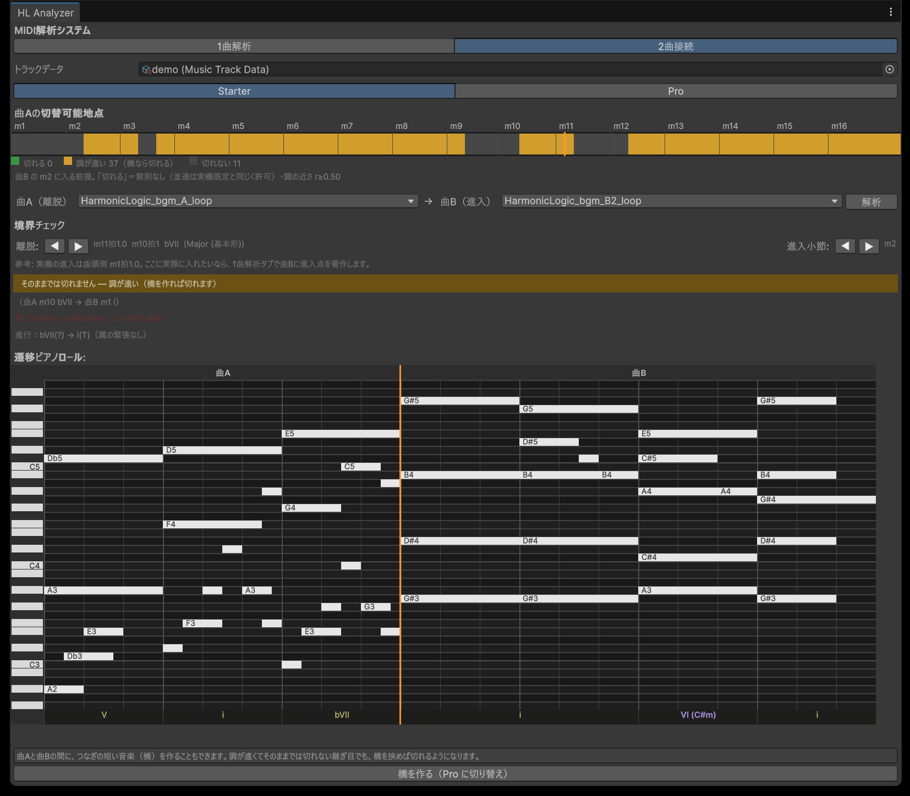
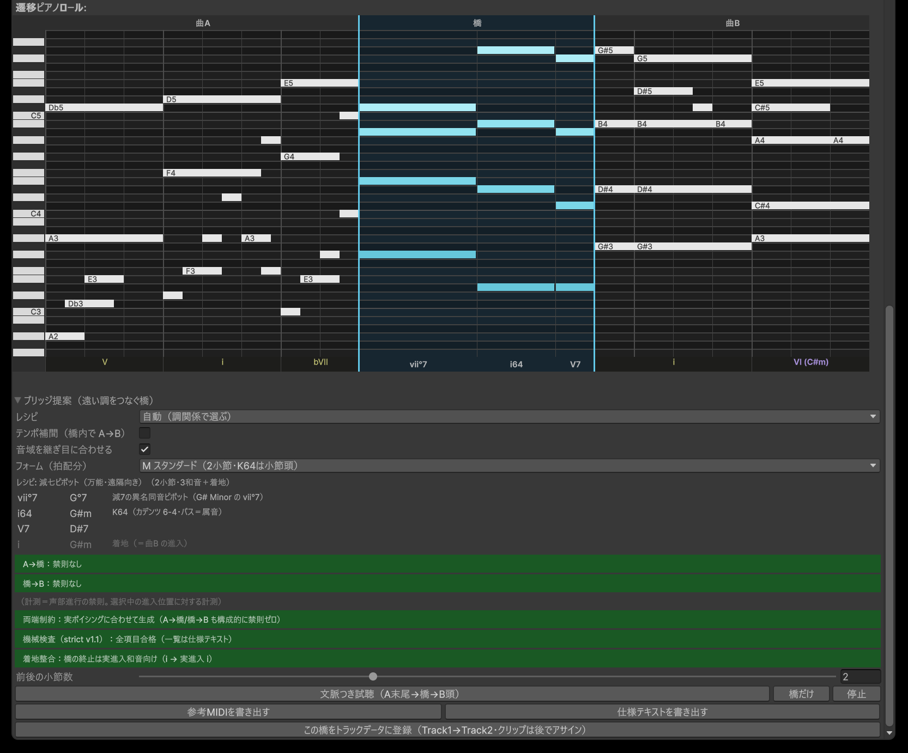

音楽理論で、ゲームのインタラクティブな音楽演出を作る Unity ツール。
完成した2曲の MIDI を和声のレベルで読み、「曲Aのどこでなら曲Bへ移れるか」を判定する。 調が遠ければ転調の橋の設計図を出す。ゲームの中では、その判定どおりのタイミングで切り替える。
動画: 曲A → 橋 → 曲B（16秒・ループ）。橋の設計図はツールが出し、音は作曲家が仕上げたもの。 YouTube で見る
ゲームの BGM は場面ごとに曲が用意され、場面が変わると曲も変わる。作曲家が納品するのは、たとえば「静かな曲」と「緊迫した曲」の2つのループ。
切り替わる瞬間は作曲家が決められない。プレイヤーがいつ場面を変えるかは分からず、「曲Aの何小節目で曲Bに移るか」はゲームのプログラムがその場で決める。 既存の仕組みは拍や小節には合わせられるが、和音の中身は見ていない。 離脱の和音、進入の和音、声部の動き、調の距離。曲をつなぐときに必ず見るものが、検査されないまま継ぎ目が決まる。

移ってよい調が遠い（橋があれば移れる）禁則があって移れない

ぶつ切りもクロスフェードも正しい演出。このツールはそれらを置き換えない。「和声的につながる」という選択肢を1つ足す。
切り替えの瞬間 T の後ろには、鳴ってはいけない「次の打鍵」が本体の音源に録音済みで存在する。 ぶつ切りにすると離脱和音の残響が失われ、フェードで切ると次の打鍵が混ざって濁る。どちらも継ぎ目が聞こえる。
対策は、離脱点ごとに「T で鳴っていた音の鳴り残りだけ」を DAW から録っておき、実行時に本体からそこへ乗り換えること。 DAW（FL Studio）を遠隔操作して離脱点の直前で止め、鳴り残りを録る道具と、実行時に乗り換える仕組みを作った。同じ和音・同じ音量の別テイクどうしを 20 ms で継ぐ。
3 秒目が切り替えの瞬間。同じ離脱点を 3 通りに。自作曲・FL Studio から採取。
A Unity tool that uses music theory to build interactive music transitions for games.
It reads the MIDI of two finished pieces at the level of harmony and decides where in piece A the music may move to piece B. When the keys are far apart, it drafts a modulating bridge. Inside the game, it switches at exactly those points.
A composer delivers, say, a calm loop and a tense loop. The composer cannot choose the moment the music switches: the player decides when the scene changes, so the game engine picks the bar on the fly. Existing systems align to beats and bars but do not look inside the chords. The exit chord, the entry chord, the voice leading, the distance between keys: everything a composer checks when joining two passages goes unchecked at the seam.
Hard cuts and crossfades are valid choices. This tool does not replace them. It adds one option: a harmonically connected transition.
Right after the switch point T, the original audio still contains the next notes. A hard cut loses the exit chord's decay; a fade lets the next notes bleed in. Both are audible seams.
The fix: for every exit point, record only the ring-out of what was sounding at T (by remote-controlling the DAW to stop just before T), and switch from the main track to that tail at runtime. Two takes of the same chord at the same level, joined with a 20 ms crossfade.
The switch is at 3 s. Same exit point, three ways. Original music, captured from FL Studio.